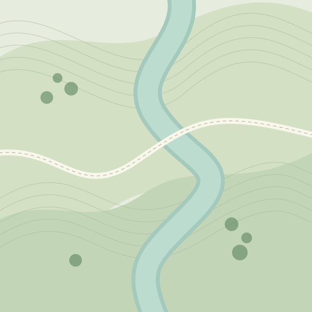

01
Cada detalhe conta.
Fotos, texto e áudio.
Tudo no mesmo registro.

Do primeiro registro ao mapa final.
Menos retrabalho. Mais campo.

ÁREA DE VISTORIA MAPA ILUSTRATIVOO essencial da vistoria.
Conectado, do início ao fim.
Fotos, texto e áudio.
Tudo no mesmo registro.
A conexão pode ficar para trás.
Seus registros continuam com você.
Localização organizada.
Exporte em KML para o QGIS.
Explore uma vistoria, do primeiro
detalhe ao arquivo para o mapa.
 Vegetação ciliar
Vegetação ciliarVegetação ciliar observada na margem do rio. Registro fotográfico e localização anexados para revisão.
Foto e relato sobre a vegetação da margem.
Prévia de exportação concluída.
Simulação · nenhum arquivo é gerado.
Desenvolvida no hackathon do IFC Concórdia, a FAtech propõe organizar vistorias ambientais em um só lugar. Os benefícios ainda serão avaliados com o uso do MVP.
Os registros podem ser salvos no celular sem internet. O mapa-base e a IA dependem de conexão; a IA também exige configuração e revisão profissional. O MVP não sincroniza dados entre celulares.
As telas, os pontos e as ações desta página são ilustrativos. A demonstração não grava áudio, coleta localização, salva dados ou gera arquivos.